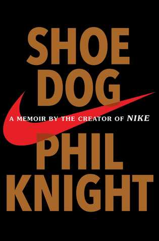

List of books I've picked up recently:
The Courage to be Disliked by Ichiro Kishimi and Fumitake Koga
The Little Book of Common Sense Investing by Johnn C. Bogle
The Intelligent Investor by Benjamin Graham
Shoe Dog by Phil Knight
The 4-hour Workweek by Timothy Ferriss'
The book in 3 sentences:
Very organized and comprehensive guide to think like Warren Buffett.
I had to purchase a paper copy even though I've finished listening to it on
Audible. This is a book that I would go back and read again and again.
How the book changed me:
It taught me a systematic way of looking at companies and evaluating them.
Researching a company especially from the value investment perspective is not
overly complicated. Overcomplicating is easier than systematically simplifying
the way you see investment opportunities. Investment requires discipline,
patience, and rationality.
Enlightening points/quotes:
- Twelve immutable tenets:
1) Business tenet: simple and understandable
2) Business tenet: consistent operating history
3) Business tenet: a favorable long-term prospects
4) Management tenet: rationality
5) Management tenet: candor
6) Management tenet: resistance to institutional imperative
7) Financial tenet: roe
8) Financial tenet: owner earnings
9) Financial tenet: profit margin
10) Financial tenet: the one-dollar premise
11) Market tenet: intrinsic value
12) Market tenet: attractive price with margin of safety
- The Mathematics of Investing: focus investing over diversification
- The Psychology of Investing: two reasons why understanding the human
dynamic is so valuable in your own investing (1) you will have guidance
to help you avoid the common mistakes (2) you will be able to recognize
other people's mistakes in time to profit from them. The size of an investor's
brain is less important than his ability to detach the brain from the emotions.
- The Value of Patience: People have System 1 (fast/irrational/intuitive) and
System 2 (slow/rational) thinking. System 2 thinking has to be accompanied by
patience to succeed in investing.
- "By periodically investing in an index fund," Buffett says in his inimitable style,
"the know-nothing investors can actually outperform most investment professionals."
- Ben Graham gave us the same lesson: “In the short run the market is
a voting machine but in the long run it is a weighing machine.”
- If the price of a particular stock is going up, we assume good things are
happening; if the price starts to go down, we assume something bad is happening,
and we act accordingly. It’s a poor mental habit.
- The size of an investor's brain is less important than his ability
to detach the brain from the emotions.
The book in 3 sentences:
Things that has occurred in your life up to this point should have no bearing on how you live from now on.
In most cases, people lack the courage to be happy, courage to overcome trauma, and courage to move on.
How the book changed me:
It changed my perspective on trauma-related theories. I would not deny the importance of understanding
where you came from and why you are who you are. However, it is important to reach some sort of
acceptance of the past and have the courage to keep them where they belong which is not your present or future.
Enlightening points/quotes:
- We live in a subjective world, not objective.
- Life is not a straight line; life is a series of dots.
- Unhappiness is something that we choose for ourselves.
- All problems are interpersonal relationship problems.
- Happiness is a feeling of contribution to something.
- Our emotions don’t happen as a result of things, we have emotions in order to serve our own goals.
The book in 3 sentences:
The simplest and most efficient investment strategy is to buy and hold all of the nation's publicly held
businesses at a very low cost. The more you move, the more you lose. The reason why investing in hedge
funds and mutual funds has a lower return is because you lose money by paying fees and taxes.
My thoughts:
It was indeed a tiny book, but it could have been smaller. My take on this book is that if your
investment cannot make over 10% return in the long-term (above 5 years), then you better just invest
in index funds like S&P 500. Therefore, an index fund is your benchmark to evaluate whether you are
doing a good job or you're just wasting your time. BUT!!! The most important thing that is missing
in this book is the question of which decades you make your investment. 10 years from 1999 to 2008
has shown the smallest growth rate on returns to S&P 500. The average total annual return for S&P 500
including dividends was only 0.67%.
Key lessons:
- It’s hard to outperform the market; that is, S&P 500.
- Taxes and fees matter!!
- The more you move, the more you lose.
- Get rid of the helpers: always remember The Gotrocks Family parable.
- 4 E’s by Warren Buffett: The greatest Enemies of the Equity investor are Expenses and Emotions.

The book in 3 sentences
Big things start simple. Nike grew from an export company to a multinational corporation.
Nike was built by people who loved running. As Phil put it, if you’re following your calling,
the fatigue will be easier to bear. Phil himself is a believer in luck and fortune but what
I see in this book is how one person's determination and focus is beating the odds.
My thoughts | lessons learned
It is a very inspiring yet very humbling book. When you're focused and determined, there is
no room for unimportant thoughts. This is the message I got from this book, and personally
more important one. And if you ever fail, fail fast, and learn fast.
Liquidity problem can be big for growth companies. I don't know if the liquidity problem
is prevalent among growth companies but I'd interested to know other success stories.
In this sense, Phil was definitely lucky. Those liquidity problems could have wiped the
company out of business.
Enlightening points | quotes
- Life is growth. You grow or you die.
- The art of competing, I’d learned from track, was the art of forgetting. You must forget your limits. You must forget your doubts, your pain, your past.
- When I failed if I failed, I’d fail quickly, so I’d have enough time, enough years, to implement all the hard-won lessons. It became my internal chant: Fail fast.
- You are remembered for the rules you break.
- Have faith in yourself, but also have faith in faith. Not faith as others defines it. Faith as you define it.
- I was a linear thinker, and according to Zen linear thinking is nothing but a delusion, one of the many that keep us unhappy. Reality is nonlinear, Zen says. No future, no past. All is now.